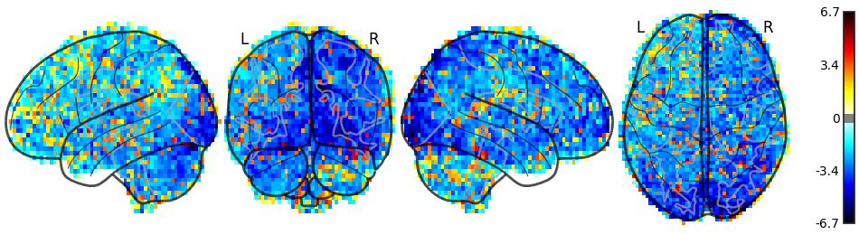
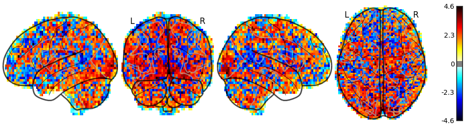

Summary
- Subject ID: 10171
- Dataset: /data/bids/openfmri/ds000030
- Model: ds000030_bart
Model
Design matrix

Contrasts

Correlation matrix

Contrasts
accept_vs_explode

Estimates
accept

explode

About
- Fitlins version: 0.0.1-dev
- Fitlins command: /home/cjmarkie/.anaconda3/bin/fitlins /data/bids/openfmri/ds000030 /data/out/ds000030/derivatives dataset
- Date processed: 2018-03-01 15:00:29 -0500